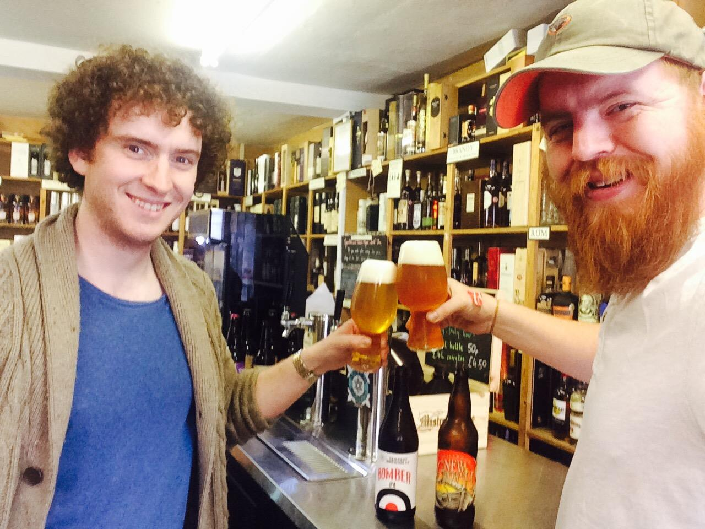

Next, we chatted to Archie McDiarmid of Luvians Bottleshop. When not managing the shop, Archie also contributes to craft beer magazine, Ferment, with a regular column on all things boozy.

How has beer changed since you were at uni here?
Bad beer hasn't changed much. Other than the scandalous move away from Tennant's in the Union,
the same big beer brands are still available in the same places. Tax has made them more expensive (no more pound a pint happy hours,
in fact thanks to legislation, no more happy hours, just 72 hour promotions).
The number of bars hasn't changed, but they are more specialised (Adamson, Brewpub etc) and the arrival of two super
local breweries and a much stronger brewing scene in Scotland generally has seen a move away from the continental
domination of the 'good beer' market. People don't think 'I want a good beer' and automatically go for a Belgian triple
or German lager at Aikmans for example.
The massive sea change has been at the quality end of the market. Cask beer is now less prominent, and for me,
less well looked after. The CAMRA crowd is now less influential, both for good and bad.
And how has it changed from a retail point of view, since you first became manager around five years ago?
The last 5 years has seen a massive jump in exploration over brand loyalty. There are so many constantly emerging new beers
that people now actively seek out new beers over ones they have tried before (even if they enjoyed them) As a result there
is a need for constant turnover of lines (Luvians sold over 2000 unique beers lines last year)
In terms of craft beer, we've now got Beer Kitchen, BrewCo, The Rule,
Brewdog over in Dundee - are we gonna see over saturation or is this still great for such a small town?
The range of choice in terms of bars is a great sign for such a small town. They all specialise to a greater
or lesser extent so you now have a variety of drinking experiences o chose from as a consumer. The competition also
forces everyone to raise there standards which can only be a good thing.
By encouraging a diverse eco-system of bars. It worries me that G1 now owns 4 restaurants and 2 bars in town. We also
need to keep comparing ourselves to the best places outside St Andrews. It is very easy to sit back and make money in
St Andrews by being 'good enough', but to really excite people we need to be exceptional for anywhere, not just 'quite good'
for a small town in Scotland. It can be done look at our chip shops, Cromars & Tailend didn't exist 10 years ago, now they
rank among the best in the U.K.
What's your favourite locally produced beer?
Favourite local beer - as a retailer that is a dangerously political
question, so I'll go from one from each local brewery StABCo Chai Porter & Eden Paritch Broo
Favourite pub in town?
For beer (or wine randomly) StABCo, for whisky The Keys, for cocktails Adamson
For nostalgia & darts The Whey Pat!
Favourite bar ever?
In St Andrews, because it was my first experience working in bars and when it was buzzing
it was phenomenal the old Ogstons (now the Rule). Worldwide Bramble in Edinburgh & Anna's in
St Helena. Wildly different, but both share the same passion for crafting a great customer experience.
Favourite beer ever?
All time Mikkeller Black Hole, regular drinking Tempest Brave New World.
Is craft beer expansion going to continue or are we going to see a bubble burst, like some are expecting with gin ‘craft’ craze ?
Craft beer is becoming a more mature market, so the rate of openings will slow down and the model is changing. Because the barriers to entry are so
low you will always get new players coming on the the market, but breaking out of you local market is now much harder because there are so many other
options out there. It will become more common to see one man band breweries earn their stripes, then pack up as the founder goes to work for a bigger,
better funded operations. From a consumer point of view overall consumption hasn't really changed, we've just changed what we're drinking. The rate of
growth of craft vs macro will slow down, but still has plenty of room to grow as new generations of drinkers enter the newly diverse marketplace.
Should Tennents be returned to the union?
Yes - it might be terrible, fizzy, flavourless slop, but it is OUR terrible, fizzy,
flavourless slop. If you are Scottish & you're going to drink terrible lager, it should be Vitamin T!
Lastly, Why should we all be shopping at Luvians?
Because we have one of the best selections of wine, beer & spirits in the U.K.
let alone Scotland and they have all been chosen by people who love drinks and want
to share that passion with our customers. Besides most people come to St Andrews to
learn or to enjoy the best that Scotland has to offer and Luvians let's you do both
all while you have a drink on your hand.